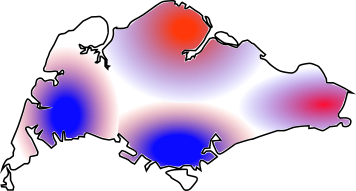

| i | X | A | Y |
|---|---|---|---|
| 1 | 9 | 1 | 2 |
| 2 | 6 | 0 | 7 |
| 3 | 10 | 1 | 2 |
| 4 | 7 | 1 | 8 |
| 5 | 8 | 1 | 2 |
| ... | ... | ... | ... |
| n | 6 | 0 | 3 |
Modelling WHAT IF questions
using observational data
Upul Cooray
Department International Oral Health
Tohoku University, Japan
3/27/23
About Me | My Work | My Plans
A Dentist
Graduated from University of Peradeniya, Sri Lanaka (2011)
Clinical Dentist ~ 4 Years
MSc Dental Public Health at UCL (2015-2016)
PhD Dental Public Health at Tohoku University, Japan (2018-2022)
Currently work as an assistant professor at Tohoku University
About Me | My Work | My Plans
Social determinants of health
Oral health inequalities
Association between oral health & general health
Evaluation of health policies
Reproducible research
About Me | My Work | My Plans
Econometric methods for causal inference
Modern causal inference frameworks for question based analytical approach
Target Trial Emulations
Intersection between machine learning and causal inference
Doubly-robust estimators (TMLE, SDR)
About Me | My Work | My Plans
R programming and functional programming in general
Learning new concepts (almost anything)
Teaching
Badminton
Playing with my kids
PREVIOUS WORK
(Econometric Methods)
About Me | My Work | My Plans
PREVIOUS WORK
(Econometric Methods)
About Me | My Work | My Plans
PREVIOUS WORK
(Machine Learning)
About Me | My Work | My Plans
PREVIOUS WORK
(Machine Learning)
About Me | My Work | My Plans
PREVIOUS WORK
(Causal inference + TMLE + Super Learner)
About Me | My Work | My Plans
CURRENT WORK
(Intuition)
About Me | My Work | My Plans
We usually default to
a “model-based” analytic approach
in oral epidemiological studies
- Binary outcome –> run a logistic regression
- Time-to-event outcome –> Cox-regression
CURRENT WORK (Intuition)
Some limitations of model based approaches
About Me | My Work | My Plans
Regression coefficients often do not represent well-defined effects Hernán MA. The hazards of hazard ratios. Epidemiology. 2010;21(1):13-15
Modelling assumptions used are rarely correct
Regression models cannot correctly handle time-dependent feedback among confounders, treatment, and the outcome Robins JM. Hernán MA. Causal Inference: What If
Model-first approaches fail to account for the variance induced during model selection Smith G. Step away from step wise. J Big Data. 2018;5(1):1-12
CURRENT WORK (Intuition)
About Me | My Work | My Plans
CURRENT WORK (Intuition)
Potential outcome/ Counterfactual framework
About Me | My Work | My Plans
What if everyone EXPOSED (A=1) vs everyone UNEXPOSED (A=0)
| i | X | A | Y(0) | Y(1) |
|---|---|---|---|---|
| 1 | 9 | 1 | NA | 2 |
| 2 | 6 | 0 | 7 | NA |
| 3 | 10 | 1 | NA | 2 |
| 4 | 7 | 1 | NA | 8 |
| 5 | 8 | 1 | NA | 2 |
| ... | ... | ... | ... | ... |
| n | 6 | 0 | 3 | NA |
| i | X | A | Y(0) | Y(1) |
|---|---|---|---|---|
| 1 | 9 | 1 | 5 | 2 |
| 2 | 6 | 0 | 7 | 3 |
| 3 | 10 | 1 | 5 | 2 |
| 4 | 7 | 1 | 3 | 8 |
| 5 | 8 | 1 | 5 | 2 |
| ... | ... | ... | ... | ... |
| n | 6 | 0 | 3 | 4 |
CURRENT WORK (Intuition)
ATE and Beyond ATE
About Me | My Work | My Plans
| i | X | A | Y(0) | Y(1) |
|---|---|---|---|---|
| 1 | 9 | 1 | 5 | 2 |
| 2 | 6 | 0 | 7 | 3 |
| 3 | 10 | 1 | 5 | 2 |
| 4 | 7 | 1 | 3 | 8 |
| 5 | 8 | 1 | 5 | 2 |
| ... | ... | ... | ... | ... |
| n | 6 | 0 | 3 | 4 |
\[ \text{ATE}:=\mathbb{E}[Y(1)-Y(0)] \]
ATE can be a causal estimate given;
POSITIVITY
Some positive probability of getting either
A=1 orA=0, based on their covariates (X)UNCONFONDEDNESS
All the common causes of
Y(a) andA must be contained inX
Other names: Ignorability/ Exogeneity
CURRENT WORK (Intuition)
Some limitations of ATE
About Me | My Work | My Plans
Positivity violation



Unrealistic contrast/ Static interventions
vs
Continuous/ categorical exposures
- Estimation & Interpretation is not straightforward
Think beyond ATE to minimize positivity violation and to obtain more realistic contrasts
Iván Díaz, Nicholas Williams, Katherine L. Hoffman & Edward J. Schenck (2021) Nonparametric Causal Effects Based on Longitudinal Modified Treatment Policies, Journal of the American Statistical Association
CURRENT WORK (Intuition)
Alternative interventions
About Me | My Work | My Plans
Observed
Dynamic intervention
Modified intervention
Possibility of positivity violation is low
Can easily model non binary exposures
Gives flexibility to ask more realistic what if questions
CURRENT WORK (Intuition)
What is a modified treatment policy?
About Me | My Work | My Plans
A modified treatment policy (MTP) is defined as an intervention that can depend on the natural value of the exposure.
We start by defining our casual question as a MTP
Often standard parametric approaches cannot handle these problems
CURRENT WORK (Implementation)
MTP [Example 01]
About Me | My Work | My Plans
CURRENT WORK (Implementation)
MTP [Example 01]: Impact of BMI changes on risk of back pain
About Me | My Work | My Plans
# What if BMI everyone increased their BMI by 1. 10% 2. 20% 3. 30% from their observed BMI
increase_10_perc <- function(data, trt) {
val <- data[[trt]] + (data[[trt]]*0.1) # desired calculation
obs <- data[[trt]] # observed value
val * (val <= 40) + # 40 is set as maximum biologically plausible BMI
(((obs <40) & (val>40)) * 40)+
(obs * (obs > 40))
}
increase_20_perc <- function(data, trt) {
val <- data[[trt]] + (data[[trt]]*0.2) # desired calculation
obs <- data[[trt]] # observed value
val * (val <= 40) + # 40 is set as maximum biologically plausible BMI
(((obs <40) & (val>40)) * 40)+
(obs * (obs > 40))
}
increase_30_perc <- function(data, trt) {
val <- data[[trt]] + (data[[trt]]*0.3) # desired calculation
obs <- data[[trt]] # observed value
val * (val <= 40) + # 40 is set as maximum biologically plausible BMI
(((obs <40) & (val>40)) * 40)+
(obs * (obs > 40))
}CURRENT WORK (Implementation)
MTP [Example 01]: Impact of BMI changes on risk of back pain
About Me | My Work | My Plans
# What if BMI everyone reduced their BMI by 1. 10% 2. 20% 3. 30% from their observed BMI
reduce_10_perc <- function(data, trt) {
val <- data[[trt]] - (data[[trt]]*0.1) # desired calculation
obs <- data[[trt]] # observed value
val * (val >= 25) + #
(((obs >25) & (val <25)) * 25) + # if BMI > 25 but % reduction makes it <25 (set them to 25)
(obs * (obs < 25)) # if BMI is < 25 set as observed bmi
}
reduce_20_perc <- function(data, trt) {
val <- data[[trt]] - (data[[trt]]*0.2) # desired calculation
obs <- data[[trt]] # observed value
val * (val >= 25) + #
(((obs >25) & (val <25)) * 25) + # if BMI > 25 but % reduction makes it <25 (set them to 25)
(obs * (obs < 25)) # if BMI is < 25 set as observed bmi
}
reduce_30_perc <- function(data, trt) {
val <- data[[trt]] - (data[[trt]]*0.3) # desired calculation
obs <- data[[trt]] # observed value
val * (val >= 25) + #
(((obs >25) & (val <25)) * 25) + # if BMI > 25 but % reduction makes it <25 (set them to 25)
(obs * (obs < 25)) # if BMI is < 25 set as observed bmi
}CURRENT WORK (Implementation)
MTP [Example 02- Categorical exposure]
About Me | My Work | My Plans

CURRENT WORK (Implementation)
MTP [Example 03- poverty income ratio]
About Me | My Work | My Plans
CURRENT WORK (Implementation)
MTP - Estimator
About Me | My Work | My Plans
- My favorite estimation tool is doubly-robust TMLE becasue of its many attractive features in estimationg defined MTPs
Semi-parametric
Can handle time-varing exposures/confounders
Can handle censoring
Can use machine learning algorithms to model exposure and outcome flexibly
Mark J. van der Laan, Sherri Rose. Targeted Learning:Causal Inference for Observational and Experimental Data. 2011. https://doi.org/10.1007/978-1-4419-9782-1
MY PLANS
Research
About Me | My Work | My Plans
Keep learning to understand causal inference more deeply in order to use their full potential within oral epidemiology.
Investigate meaningful causal questions related to oral health inequlities using good qulity longitudinal data sources.
Extending my current methods for health policy analysis.
Expanding the scope of my research activities by understanding methods such as microsimulations
Writing good quality papers to improve my research portfolio
MY PLANS
Overall- Career
About Me | My Work | My Plans
Establish myself as a leading dental public health researcher
Expand my collaborations
Get more involved in teaching/ mentoring
Write a book - a very non-technical easy to understand causal inference book for dental researchers